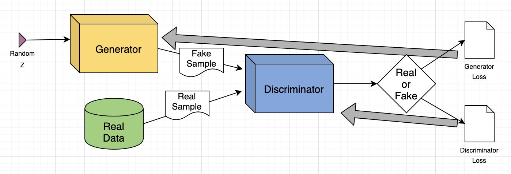
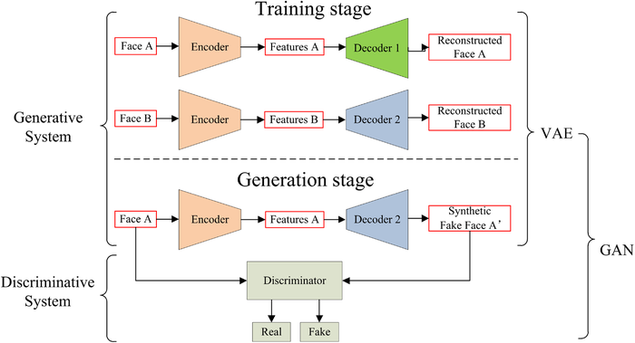

2.1 Conteúdos Sintéticos: o que são
Diz-se um conteúdo sintético todo o tipo de informação modificada ou gerada por algoritmos e IA. Estes conteúdos incluem formatos textuais e multimédia (imagens, vídeos, áudios). O conteúdo sintético é facilmente personalizável, podendo ser adaptado com bastante facilidade para diferentes públicos e utilidades.
O conteúdo sintético pode ser utilizado na indústria nas seguintes formas:
As tecnologias por trás do conteúdo sintético, como Machine Learning (ML) e Redes Neuronais Artificiais (RNAs), estão em constante evolução, aumentando o leque de possibilidades para a criação e expansão deste tipo de conteúdos.
2.2 Deepfakes: Definição e funcionamento
Os Deepfakes, palavra originada da junção da expressão “deep learning” (aprendizagem profunda) e “fake” (falso), são um tipo de conteúdo sintético, criados através de técnicas que utilizam a IA com o intuito de manipular informações através da criação de fotos, vídeos ou áudios falsos.
A criação de um deepfake envolve a colheita de dados de um ficheiro multimédia de uma determinada entidade. Estes dados são processados por meio de algoritmos de deep learning, que por sua vez treinam RNAs capazes de mapear expressões faciais, padrões de movimento e o timbre da voz do indivíduo. Após estes treinos, as RNAs tornam-se capazes de substituir o rosto ou a voz, permitindo gerar reproduções extremamente realistas. Quantos mais dados sobre o indivíduo, mais efetivo é o resultado do deepfake.
Outro fator importante para a criação de deepfakes é o uso de Generative Adversarial Networks (GANs) (Redes Adversárias Generativas), um tipo de Rede Neuronal Artificial (RNA) que utiliza processos que envolvem um modelo gerador e um modelo classificador. O classificador é o usuário que tenta identificar a veracidade do conteúdo, enquanto o gerador tenta produzir resultados mais difíceis de distinguir.
Os principais exemplos de deepfakes na atualidade são os seguintes:
No entanto, existem alguns alertas que podemos ter em conta que nos podem ajudar a identificar os deepfakes, como demonstra a tabela seguinte:
| Categoria | Descrição |
|---|---|
| Fala assíncrona | Os deepfakes podem apresentar o áudio não sincronizado com o movimento dos lábios. |
| Irregularidades na voz | Oscilações no tom e alterações repentinas de timbre podem indicar que o conteúdo é sintético. |
| Indícios visuais e de movimento | Deepfakes podem apresentar movimentos pouco naturais, como expressões faciais rígidas, mudanças bruscas no rosto ou deformações momentâneas. Piscar de olhos de forma repetitiva ou em ritmo estranho também é um sinal comum. |
| Marcas d’água e etiquetas nas plataformas | Algumas ferramentas deixam marcas d’água visíveis nos conteúdos gerados, e certas redes sociais identificam automaticamente estes materiais com rótulos como “Criado por IA”. |
2.3 Tipos de conteúdo sintético
| Tipo | Formato | Descrição |
|---|---|---|
| Texto | Artigos, mensagens, resumos | Conteúdo gerado por modelos como GPT, capaz de imitar escrita humana e criar textos coerentes. |
| Imagem | Fotografias, arte digital | Criadas com modelos de difusão ou GANs; podem representar pessoas, objetos ou cenários inexistentes. |
| Áudio | Voz, música, efeitos sonoros | Geração ou clonagem de voz através de TTS ou Voice Conversion, podendo replicar vozes reais. |
| Vídeo | Animações, deepfakes, cenas sintéticas | Manipulação ou criação completa de vídeo; usado em deepfakes e simulações realistas. |
2.4 Ferramentas utilizadas

